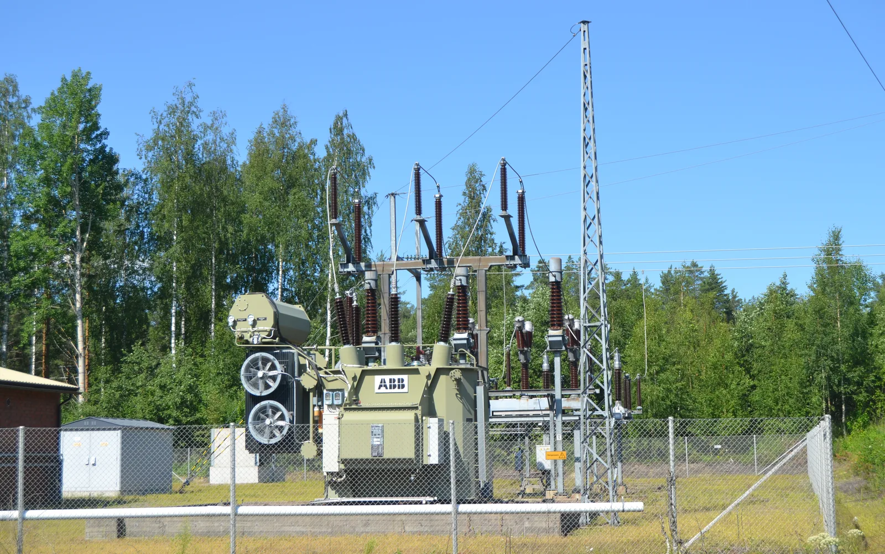

Transferring energy: electricity and heat
Why is the voltage in power lines hundreds of kilovolts when a wall socket gives only $230\,\text{V}$, and why are district heating pipes wrapped in thick insulation?
Prior knowledge
- Power tells the rate at which energy is transferred: $P = \Delta E : \Delta t$chapter Power: $P = \Delta E/\Delta t$
- Efficiency is the share of the energy used that is obtained as useful energychapter Efficiency
- Energy does not disappear but changes form, often into heatchapter Forms of energy and conservation of energy
Core path: follow the steps in order. Besides calculations, the core path includes investigations, explanations and graphs. Tasks marked Optional give extra practice. Optional tasks: 4.
Think about it
The wall socket at home gives $230\,\text{V}$, but in the wires of the power lines across the field the voltage is hundreds of kilovolts. In winter steam rises from a district heating manhole at the edge of the street: hot water runs underground for kilometres.
Why is energy transferred like this, and how much of it is wasted on the way?
Optional Recap: efficiency
Predict
Make your predictions before investigating 2 questions
Prediction 1: how much electricity is lost
Prediction 2: why high voltage
Investigate
District heating: how much is left on the way?
Statistical data · Finnish Energy, District heating statistics 2024 (figures rounded)
In 2024 heat was supplied to the district heating networks of Finland, and customers used part of it. The difference is mostly the loss of the network, so the result is an estimate.
| Energy (TWh) | |
|---|---|
| Heat supplied to the network | $36.0$ |
| Heat used by customers | $32.7$ |
First calculate the loss in terawatt-hours and then its share of the heat supplied to the network.
What percentage of the thermal energy supplied to the network did not reach the customers? Give your answer as a percentage.
Hint 1: a guiding question
First calculate how much energy was left on the way: sent energy minus arrived energy.
Hint 2: what is the connection
$E_\text{loss} = 36.0\,\text{TWh} - 32.7\,\text{TWh}$.
Hint 3: an intermediate step
The share is the loss divided by the sent energy: $3.3\,\text{TWh} : 36.0\,\text{TWh}$. Finally multiply by one hundred to get a percentage.
Show the solution
Given
energy supplied to the network $E_\text{sent} = 36.0\,\text{TWh}$ and energy used by customers $E_\text{arrived} = 32.7\,\text{TWh}$ (Finnish Energy, 2024)
Find
the share of the loss in the sent energy as a percentage
Principle
Energy does not disappear. What is sent but does not reach customers has turned into heat in the surroundings, that is, it is transmission loss. The share is calculated from the sent energy, because the percentage tells what part of the heat fed into the network was lost.
Formula
Conversions
No unit conversions, because both energies are in terawatt-hours. The share is changed into a percentage by multiplying by one hundred:
Substitution
and
Answer
$9.2\,\%$
Two significant figures, because the difference $3.3\,\text{TWh}$ is known to two figures.
Reasonableness
Ten per cent of $36.0\,\text{TWh}$ would be $3.6\,\text{TWh}$, and the loss $3.3\,\text{TWh}$ is a little smaller, so about $9\,\%$ is of the right size. It is more than twice the loss of about $4\,\%$ in the electricity grid.
Electricity grid and district heating side by side
Statistical data · Finnish Energy, Electricity year 2024 and District heating statistics 2024 (figures rounded)
The table shows the loss of the electricity grid and of the district heating network in 2024. The loss of the electricity grid is about $4\,\%$ of electricity consumption, which is used here as the energy sent into the grid; the figure for district heating is from the previous data. The figures for electricity are rounded.
| Sent (TWh) | Loss (TWh) | Share (%) | |
|---|---|---|---|
| Electricity grid | $83$ | $3$ | $4$ |
| District heating network | $36.0$ | $3.3$ | $9.2$ |
Compare the loss as energy and as a share of the sent energy.
The same power at different voltages
Values calculated by a model
The table shows example values calculated by a model: a power of $10\,\text{MW}$ is transferred over a distance of $10\,\text{km}$ with similar wires at three different voltages. The values are examples of orders of magnitude, not measurements of a real line. The higher the voltage, the smaller the electric current needed to transfer the same power.
| Voltage (kV) | Power lost (MW) |
|---|---|
| $20$ | $0.80$ |
| $110$ | $0.026$ |
| $400$ | $0.0020$ |
Work out from the table what percentage of the transferred power is lost at each voltage, and compare them.
Conclusion: why is energy transferred like this?
Based on the data, write: Why do power lines use high voltage? What share of the energy is lost in the electricity grid and in the district heating network? What happens to the lost energy?
Model answer
The same power is transferred at high voltage with a smaller electric current, and a wire gets warmer as the current grows. In the example of the model, when $10\,\text{MW}$ is transferred, $8.0\,\%$ is lost at $20\,\text{kV}$ but only $0.020\,\%$ at $400\,\text{kV}$, so long distances are covered with high voltage. In Finland the loss of the electricity grid in 2024 was about $4\,\%$ and that of the district heating network about $9\,\%$ (Finnish Energy). The loss of district heating is larger because hot water is clearly warmer than its surroundings and heat escapes through the insulation along the whole way. The loss does not disappear but turns into heat in the surroundings, so the energy is conserved, but the user gets no benefit from it.
Assess your own answer
Tick the points your own answer already contains.
Theory
Key idea
Energy is often produced far from where it is used: the power plant is outside the city, but the heater and the wall socket are at home. So the energy has to be transferred to the user. In Finland this happens in two ways: as electrical energy in the electricity grid and as thermal energy in the water pipes of the district heating network.
The electricity grid
The electricity grid carries electrical energy from the power plant to the home. Long distances are covered by the power lines of the national grid, whose voltage is $110\text{–}400\,\text{kV}$. Closer to the user the voltage is first lowered to $20\,\text{kV}$ and finally to the $0.4\,\text{kV}$ of the low-voltage network, from which the sockets in homes get $230\,\text{V}$. The voltage is changed in transformers.
Why long distances use high voltage
The same power can be transferred in two ways: with a low voltage and a large electric current, or with a high voltage and a small electric current. A wire gets hotter the larger the current in it is, and the energy used for heating is a loss. So long distances are covered with a high voltage, which keeps the current and the loss small. The exact connection between voltage, current and loss belongs to later courses on electricity.
A transformer raises the voltage at the power plant and lowers it again close to the user. In a good transformer the loss is very small.

District heating
District heating transfers energy as hot water. The water heated at the heating plant flows in the supply pipe to buildings and gives heat to the building's heating system. The cooled water returns in the return pipe to be heated again. The pipes are underground in thick insulation so that as little heat as possible goes into the surrounding ground.
Transmission loss
In both networks some of the energy turns into heat in the surroundings on the way and does not arrive. This is called transmission loss. The energy does not disappear (chapter Forms of energy and conservation of energy), but the loss is useless to the user.
In Finland the losses of the electricity grid in 2024 were about $4\,\%$ of electricity consumption, when consumption was about $83\,\text{TWh}$ (Finnish Energy, Sähkövuosi 2024). In this chapter consumption is used as the energy sent into the electricity grid, so $4\,\%$ is a share of it. About $36\,\text{TWh}$ was supplied to the district heating network in 2024 and about $32.7\,\text{TWh}$ was used by customers, so about $9\,\%$ was left on the way (Finnish Energy, Kaukolämpötilasto 2024; the share is calculated from the difference, so it is an estimate). The loss of district heating is relatively larger because hot water is clearly warmer than its surroundings: the greater the temperature difference to the surroundings, the more heat escapes, and heat gets through the insulation along the whole length of the pipework.
Transferring energy in time: storage
Energy is also transferred in time. Wind power and solar electricity are produced when the wind blows or the sun shines, but electricity is needed at other times too. A store takes in energy when there is too much of it and gives it out later.
In a battery the energy is stored as chemical energy. In a pumped-storage power plant water is pumped to an upper reservoir, and the water flowing down turns the machines of the power plant. In a heat store hot water stays in an insulated tank, and it is used for example in the district heating network. Electricity is not stored in large amounts as such but by converting it into another form of energy and back, and in every conversion some of the energy turns into heat.
Transmission loss
The loss is the difference between the energy sent into the network and the energy that arrives. The efficiency of the transfer (chapter Efficiency) is the share of the sent energy that arrives:
$$\begin{aligned} E_\text{loss} &= E_\text{sent} - E_\text{arrived} \\ \eta &= \frac{E_\text{arrived}}{E_\text{sent}} \end{aligned}$$
where $E_\text{sent}$ is the energy fed into the network, $E_\text{arrived}$ the energy that reached the user, $E_\text{loss}$ the energy that turned into heat on the way and $\eta$ the efficiency of the transfer. Efficiency is given as a percentage or as a decimal number.
In the figure the width of a stream shows the amount of energy. In the electricity grid $4\,\%$ of the sent energy (the consumption) is lost and $96\,\%$ arrives, in district heating $9\,\%$ and $91\,\%$.
Calculating from a loss percentage
A loss percentage is always taken of the sent energy. If the loss is $9.0\,\%$, then $100\,\% - 9.0\,\% = 91.0\,\%$ of the sent energy arrives, and $91.0\,\% = 91.0 : 100 = 0.910$. The energy you need is solved from the formula: $E_\text{arrived} = \eta\, E_\text{sent}$ and $E_\text{sent} = E_\text{arrived} : \eta$.
The same applies to power: the power that arrives is $\eta$ times the power sent. Energy and power are connected by the formula $P = \tfrac{E}{t}$ (chapter Power: $P = \Delta E/\Delta t$), so with a steady loss power $P_\text{loss}$ the energy lost during a time $t$ is $E_\text{loss} = P_\text{loss} \cdot t$.
Common misconception
Many people think that energy disappears in transmission loss. Energy does not disappear: it turns into heat, which warms the wires, the pipes and their surroundings, and the user gets no benefit from it.
Another mistake is to take the loss percentage of the energy that arrives. The percentage must be taken of the sent energy: if the loss is $9.0\,\%$ and $245\,\text{MWh}$ arrives, the sent energy is not $245\,\text{MWh} + 0.090 \cdot 245\,\text{MWh}$ but $245\,\text{MWh} : 0.910$.
A third mistake is to think that the loss is subtracted from the percentage as a unit: a loss of $4\,\%$ does not mean $4\,\text{MWh}$ but four hundredths of the sent energy.
Summary
- Electrical energy is transferred in the electricity grid, long distances at high voltage, because then the current is small and the loss caused by heating of the wires is small. Transformers raise and lower the voltage.
- Thermal energy is transferred in the district heating network as hot water in insulated pipes. In Finland the losses were about $4\,\%$ in the electricity grid and about $9\,\%$ in the district heating network (Finnish Energy, 2024).
- Transmission loss $E_\text{loss} = E_\text{sent} - E_\text{arrived}$ and efficiency of the transfer $\eta = E_\text{arrived} : E_\text{sent}$. The loss percentage is taken of the sent energy.
- Stores (battery, pumped-storage plant, heat store) transfer energy in time, but in them too some of the energy turns into heat.
Optional Would you change your prediction?
Look at your predictions and the results of the data.
Would you change your prediction?
Examples
Once you have studied the chapter's theory, move on to the guided examples. In the first you follow a worked solution step by step; in the next ones you make the choices yourself, and the hints help if you get stuck.
Example 1: District heating losses
A district heating network transfers $245\,\text{MWh}$ of thermal energy per week from the heating plant to a district of the city (an example situation). The loss of the network is $9.0\,\%$ of the sent energy. How much energy arrives and how much is lost?
Step 1/7
Given and find. $E_\text{sent} = 245\,\text{MWh}$ and the loss is $9.0\,\%$ of the sent energy. We want the energy that arrives, $E_\text{arrived}$, and the loss $E_\text{loss}$.
Step 2/7
Principle. Energy does not disappear, so the sent energy equals the arriving and the lost energy together. When $9.0\,\%$ is lost, the remaining $91.0\,\%$ arrives, so the efficiency is $\eta = 0.910$.
Step 3/7
Rearranged formula. $$\begin{aligned} &E_\text{arrived} = \eta\, E_\text{sent} \\ &E_\text{loss} = E_\text{sent} - E_\text{arrived} \end{aligned}$$
Step 4/7
Unit conversions. The efficiency is obtained from the percentage:
The energies are in the same unit, megawatt-hours, so no other conversion is needed.
Step 5/7
Substitution. $$\begin{aligned} E_\text{arrived} &= \eta\, E_\text{sent} \\ &= 0.910 \cdot 245\,\text{MWh} \\ &= 222.95\,\text{MWh} \\ E_\text{loss} &= E_\text{sent} - E_\text{arrived} \\ &= (245 - 222.95)\,\text{MWh} \\ &= 22.05\,\text{MWh} \end{aligned}$$
Step 6/7
Result. About $223\,\text{MWh}$ arrives and about $22\,\text{MWh}$ is lost. The arriving energy is given with three significant figures because the efficiency $0.910$ and the sent energy $245\,\text{MWh}$ are known to three figures. The loss is given with two significant figures because the loss percentage $9.0\,\%$ is known only to two figures.
Step 7/7
Reasonableness. Ten per cent of $245\,\text{MWh}$ would be $24.5\,\text{MWh}$, and $9.0\,\%$ is slightly less, so a loss of $22\,\text{MWh}$ is of the right size. Also $222.95\,\text{MWh} + 22.05\,\text{MWh} = 245\,\text{MWh}$, so the energy is conserved.
Optional Example 2: Find the error
Example 3: Apply to a new situation
A home battery is charged with electricity, and $12.0\,\text{kWh}$ is taken from the grid. Later $10.2\,\text{kWh}$ of electricity is obtained back from the battery.
What percentage of the energy put into the store turns into heat? Give your answer as a percentage.
Hint 1: a guiding question
A battery is a store: it transfers energy in time. What is the energy put in and what is the energy obtained back?
Hint 2: what is the connection
Energy does not disappear, so the loss is the energy put in minus the energy obtained back: $12.0\,\text{kWh} - 10.2\,\text{kWh}$.
Hint 3: an intermediate step
The share is calculated from the energy put in: $1.8\,\text{kWh} : 12.0\,\text{kWh}$, and the result is multiplied by one hundred to get a percentage.
Show the solution
Given
energy put into the store $E_\text{sent} = 12.0\,\text{kWh}$ and energy obtained back $E_\text{arrived} = 10.2\,\text{kWh}$
Find
the share of the energy that turns into heat, as a percentage of the energy put in
Principle
A battery transfers energy in time, and some of the energy turns into heat in charging and discharging. Energy is conserved, so the loss is the difference between the energy put in and the energy obtained back. The share is calculated from the energy put in.
Formula
Conversions
No unit conversions, because both energies are in kilowatt-hours. The share is changed into a percentage by multiplying by one hundred.
Substitution
and
Answer
$15\,\%$
Two significant figures, because the difference $1.8\,\text{kWh}$ is known to two figures.
Reasonableness
The share obtained back is $10.2 : 12.0 = 0.85$, or $85\,\%$, and $85\,\% + 15\,\% = 100\,\%$. The loss is larger than the loss of the electricity grid and of the district heating network, which is believable for a store in which energy is converted twice.
Review the chapter's concepts
Cards you mark Review later collect in your review deck.
- Energy system
- The whole made up of the production, transmission, storage and consumption of energy.
- Distributed generation
- Energy is produced at many small sites close to consumers as well as in large central plants.
- Smart grid
- A digital grid controls production and consumption and passes information both ways.
- Balancing power
- Electricity production whose output can be changed quickly to balance production and consumption.
- Energy storage
- Energy is turned into a form that can be kept and released later when needed.
- Thermal storage
- Thermal energy is kept for later use, for example in water, soil or the structures of buildings.
- Pumped-storage plant
- Surplus electricity pumps water uphill, and the energy is stored as potential energy of the water.
- Flywheel
- Kinetic energy is stored in a rotating body and can later be turned back into electricity.
- Microgrid
- A local energy grid that links nearby producers, storage and consumers.
Exercises
Level 1 · basic practice 8 exercises
One formula or one step of reasoning. Core exercises first, the rest is extra practice.
- Exercise 7-1Core
A power plant feeds $500\,\text{MWh}$ of electrical energy into the electricity grid in a day. In the grid, $4.0\,\%$ of the sent energy is lost.
How much energy arrives? Give your answer in megawatt-hours.
Answer
$480\,\text{MWh}$
Show the solution
Given
energy fed into the network $E_\text{sent} = 500\,\text{MWh}$, loss $4.0\,\%$ of the sent energy
Find
the energy that arrives $E_\text{arrived}$ in megawatt-hours
Principle
The loss percentage is taken of the sent energy. When $4.0\,\%$ is lost, the remaining $96.0\,\%$ arrives, so the efficiency of the transfer is $\eta = 0.960$.
Formula
$\eta$$= \dfrac{E_\text{arrived}}{E_\text{sent}}$so $E_\text{arrived} = \eta\, E_\text{sent}$
Conversions
The efficiency is obtained from the percentage:
$\eta$$= 100\,\% - 4.0\,\%$$= 96.0\,\%$$= 96.0 : 100$$= 0.960$The unit of energy stays the same.
Substitution
$E_\text{arrived}$$= 0.960 \cdot 500\,\text{MWh}$$= 480\,\text{MWh}$Answer
$480\,\text{MWh}$
Three significant figures as in the given data.
Reasonableness
The loss is $4.0\,\% \cdot 500\,\text{MWh} = 20\,\text{MWh}$, and $480\,\text{MWh} + 20\,\text{MWh} = 500\,\text{MWh}$, so the energy is conserved. The arriving energy is smaller than the sent energy, as it should be.
- Exercise 7-2
The figure shows the energy flows of the electricity grid and the district heating network. A heating plant feeds $360\,\text{MWh}$ of thermal energy into the district heating network in a week. Read from the figure what share of the energy sent into the district heating network is lost.
How much energy is lost in the network during the week? Give your answer in megawatt-hours.
Answer
$32\,\text{MWh}$
Show the solution
Given
energy sent into the district heating network $E_\text{sent} = 360\,\text{MWh}$; the share of the loss is read from the figure
Find
the loss $E_\text{loss}$ in megawatt-hours
Principle
Energy does not disappear. The part of the sent energy that does not arrive turns into heat in the surroundings on the way, that is, it is transmission loss. The share of the loss is taken of the sent energy, so the loss is the share times the sent energy.
Reading the graph
The lower energy flow in the figure is the district heating network. At its branch that curves downward it says $9\,\%$ (loss), and at the branch that continues to the end it says $91\,\%$ (arrives); together they are the $100\,\%$ of the sent flow. So the share of the loss is $9\,\% = 0.09$. The upper flow is the electricity grid and is not needed.
Formula
$E_\text{loss} = 0.09 \cdot E_\text{sent}$
Conversions
Percentage to decimal number: $9\,\% = 9 \cdot 0.01 = 0.09$. The energy stays in megawatt-hours.
Substitution
$E_\text{loss}$$= 0.09 \cdot 360\,\text{MWh}$$= 32.4\,\text{MWh}$Answer
about $32\,\text{MWh}$, two significant figures, because the percentage in the figure is rounded to whole percent.
Reasonableness
One tenth of $360\,\text{MWh}$ is $36\,\text{MWh}$, and $9\,\%$ is a little less than a tenth, so about $32\,\text{MWh}$ is the right order of magnitude. The energy that arrives is $360\,\text{MWh} - 32.4\,\text{MWh} \approx 328\,\text{MWh}$, or $91\,\%$, as in the figure.
- Exercise 7-3
$80.0\,\text{MWh}$ of electricity is sent into the national grid, and $76.8\,\text{MWh}$ reaches the users. What is the efficiency of the transfer? Give your answer as a percentage.
Answer
$96.0\,\%$
Show the solution
Given
sent energy $E_\text{sent} = 80.0\,\text{MWh}$ and arrived energy $E_\text{arrived} = 76.8\,\text{MWh}$
Find
the efficiency of the transfer $\eta$ as a percentage
Principle
The efficiency is the share of the sent energy that arrives.
Formula
$\eta$$= \dfrac{E_\text{arrived}}{E_\text{sent}}$Conversions
The ratio is a decimal number, which is changed into a percentage by multiplying by one hundred:
$0.960$$= 0.960 \cdot 100\,\%$$= 96.0\,\%$Substitution
$\eta$$= \dfrac{76.8\,\text{MWh}}{80.0\,\text{MWh}}$$= 0.960$$= 96.0\,\%$Answer
$96.0\,\%$
Three significant figures as in the energies.
Reasonableness
The efficiency is below $100\,\%$, as it should be, and the loss $80.0\,\text{MWh} - 76.8\,\text{MWh} = 3.2\,\text{MWh}$ is $4.0\,\%$ of the sent energy, which is a usual loss for an electricity grid.
- Exercise 7-4
A power plant feeds an electric power of $125\,\text{MW}$ into the network, and $4.0\,\%$ of the sent power is lost in the network.
How much power arrives? Give your answer in megawatts.
Answer
$120\,\text{MW}$
Show the solution
Given
sent power $P_\text{sent} = 125\,\text{MW}$, loss $4.0\,\%$ of the sent power
Find
the power that arrives $P_\text{arrived}$ in megawatts
Principle
The loss percentage applies to power in the same way as to energy. When $4.0\,\%$ is lost, $96.0\,\%$ of the sent power arrives.
Formula
$P_\text{arrived} = \eta\, P_\text{sent}$
Conversions
$\eta$$= 100\,\% - 4.0\,\%$$= 96.0\,\%$$= 96.0 : 100$$= 0.960$Substitution
$P_\text{arrived}$$= 0.960 \cdot 125\,\text{MW}$$= 120.0\,\text{MW}$Answer
$120\,\text{MW}$
Three significant figures as in the sent power $125\,\text{MW}$.
Reasonableness
The power lost is $4.0\,\% \cdot 125\,\text{MW} = 5.0\,\text{MW}$, and $120.0\,\text{MW} + 5.0\,\text{MW} = 125\,\text{MW}$. The result is a little below $125\,\text{MW}$, as it should be.
- Exercise 7-5
Heat escapes steadily from a district heating pipe into the surroundings at a power of $2.5\,\text{kW}$.
How much energy is lost in a day? Give your answer in kilowatt-hours.
Answer
$60\,\text{kWh}$
Show the solution
Given
loss power $P_\text{loss} = 2.5\,\text{kW}$ and time $t = 24\,\text{h}$
Find
the energy lost $E_\text{loss}$ in kilowatt-hours
Principle
At a steady power, energy is power times time, because power tells the rate at which energy is transferred (chapter Power: $P = \Delta E/\Delta t$).
Formula
$P = \dfrac{E}{t}$, so $E_\text{loss} = P_\text{loss} \cdot t$
Conversions
Not needed: a kilowatt times an hour is directly a kilowatt-hour.
Substitution
$E_\text{loss}$$= 2.5\,\text{kW} \cdot 24\,\text{h}$$= 60\,\text{kWh}$Answer
$60\,\text{kWh}$
Two significant figures as in the power $2.5\,\text{kW}$.
Reasonableness
Estimate: $2.5\,\text{kW}$ is about $3\,\text{kW}$, and $3 \cdot 24 = 72$, so the result $60\,\text{kWh}$ is of the right size.
- Exercise 7-6Core
Why is electrical energy transmitted at a high voltage in the national grid?
Answer
For the same power, a smaller current is enough, so the conductors heat up less and the loss becomes smaller.
Show the solution
Find
why electrical energy is transmitted at a high voltage in the national grid.
Principle
In the transmission of electricity, the loss occurs when current heats the conductors. The power of electricity depends on the voltage and the current, so the higher the voltage, the smaller the current that is enough for the same power. A smaller current heats the conductors less.
Model answer
At a high voltage, a smaller current is enough for the same power, so the conductors heat up less and the loss becomes smaller. Voltage does not add energy, and the loss still does not disappear completely: about $4\,\%$ of the sent energy is still lost in the grid. The cause of the loss is not the speed of electricity but the heating of the conductor as current flows.
- Exercise 7-7
$250\,\text{MWh}$ of electrical energy is sent into a regional electricity grid in a day, and $238\,\text{MWh}$ reaches the users.
What share of the sent energy is lost? Give your answer as a percentage.
Answer
$4.8\,\%$
Show the solution
Given
sent energy $E_\text{sent} = 250\,\text{MWh}$ and arrived energy $E_\text{arrived} = 238\,\text{MWh}$
Find
the share of the sent energy that is lost, as a percentage
Principle
The loss is the difference between the sent and the arrived energy, and the share of the loss is calculated from the sent energy.
Formula
$E_\text{loss} = E_\text{sent} - E_\text{arrived}$, and the share
$p$$= \dfrac{E_\text{loss}}{E_\text{sent}}$Conversions
The quotient is a decimal number, which is converted into a percentage by multiplying by one hundred: $0.048 = 0.048 \cdot 100\,\% = 4.8\,\%$.
Substitution
$E_\text{loss}$$= 250\,\text{MWh} - 238\,\text{MWh}$$= 12\,\text{MWh}$and
$p$$= \dfrac{12\,\text{MWh}}{250\,\text{MWh}}$$= 0.048$$= 4.8\,\%$Answer
$4.8\,\%$
Two significant figures, because the difference $12\,\text{MWh}$ is a two-digit number.
Reasonableness
Four per cent of $250\,\text{MWh}$ would be $10\,\text{MWh}$, and the loss $12\,\text{MWh}$ is slightly greater, so $4.8\,\%$ is of the right size. Also $238\,\text{MWh} + 12\,\text{MWh} = 250\,\text{MWh}$.
- Exercise 7-8
A power of $800\,\text{kW}$ is sent from a heating plant into a district heating pipe, and a power of $728\,\text{kW}$ reaches the property.
How much power is lost in the pipe? Give your answer in kilowatts.
Answer
$72\,\text{kW}$
Show the solution
Given
sent power $P_\text{sent} = 800\,\text{kW}$ and arrived power $P_\text{arrived} = 728\,\text{kW}$
Find
the loss power $P_\text{loss}$ in kilowatts
Principle
Power is the rate of energy transfer, so the sent power divides into the arrived power and the lost power in the same way as energy does.
Formula
$P_\text{loss} = P_\text{sent} - P_\text{arrived}$
Conversions
Not needed: both powers are in kilowatts.
Substitution
$P_\text{loss}$$= 800\,\text{kW} - 728\,\text{kW}$$= 72\,\text{kW}$Answer
$72\,\text{kW}$
Two significant figures, because the precision of the difference is limited by the power $728\,\text{kW}$ in whole kilowatts.
Reasonableness
The share of the loss is
$72\,\text{kW} : 800\,\text{kW}$$= 0.090$$= 9.0\,\%$which is a typical loss of a district heating network. Also $728\,\text{kW} + 72\,\text{kW} = 800\,\text{kW}$.
Level 2 · applied practice 8 exercises
Two steps, working with measured data, a unit conversion or rearranging a formula. Core exercises first, the rest is extra practice.
- Exercise 7-9Core
In a poorly insulated district heating network, $20\,\%$ of the energy sent into the network is lost, and $600\,\text{MWh}$ reaches the customers in a week.
How much energy is lost in the network in a week? Give your answer in megawatt-hours.
Answer
$150\,\text{MWh}$
Show the solution
Given
arrived energy $E_\text{arrived} = 600\,\text{MWh}$, loss $20\,\%$ of the sent energy
Find
the energy lost $E_\text{loss}$ in megawatt-hours
Principle
The loss percentage belongs to the sent energy, not to the energy that arrived. So first calculate the sent energy using the efficiency, and then the loss as a difference.
Formula
$\eta$$= \dfrac{E_\text{arrived}}{E_\text{sent}}$so
$E_\text{sent}$$= \dfrac{E_\text{arrived}}{\eta}$and $E_\text{loss} = E_\text{sent} - E_\text{arrived}$
Conversions
$\eta$$= 100\,\% - 20\,\%$$= 80\,\%$$= 80 : 100$$= 0.80$The unit of energy stays megawatt-hours.
Substitution
$E_\text{sent}$$= \dfrac{600\,\text{MWh}}{0.80}$$= 750\,\text{MWh}$and
$E_\text{loss}$$= 750\,\text{MWh} - 600\,\text{MWh}$$= 150\,\text{MWh}$Answer
$150\,\text{MWh}$
Two significant figures as in the loss percentage $20\,\%$.
Reasonableness
The loss is $20\,\% \cdot 750\,\text{MWh} = 150\,\text{MWh}$, which matches. If the percentage were taken of the energy that arrived, we would get $0.20 \cdot 600\,\text{MWh} = 120\,\text{MWh}$, which is too little: the sent energy would then be $720\,\text{MWh}$, and $120\,\text{MWh}$ of that is only about $17\,\%$, not $20\,\%$.
- Exercise 7-10
A district of the city needs $1.20\,\text{GWh}$ of heat per week. The efficiency of the old district heating network is $80\,\%$.
How much energy must the heating plant feed into the network per week? Give your answer in megawatt-hours.
Answer
$1500\,\text{MWh}$
Show the solution
Given
arrived energy $E_\text{arrived} = 1.20\,\text{GWh}$, efficiency $\eta = 80\,\%$
Find
the energy to be fed into the network $E_\text{sent}$ in megawatt-hours
Principle
The efficiency of the network tells what share of the sent energy arrives, so the sent energy is the quotient of the arrived energy and the efficiency.
Formula
$\eta$$= \dfrac{E_\text{arrived}}{E_\text{sent}}$so
$E_\text{sent}$$= \dfrac{E_\text{arrived}}{\eta}$Conversions
$80\,\% = 80 : 100 = 0.80$ and $1\,\text{GWh} = 1000\,\text{MWh}$, so
$1.20\,\text{GWh}$$= 1.20 \cdot 1000\,\text{MWh}$$= 1200\,\text{MWh}$Substitution
$E_\text{sent}$$= \dfrac{1200\,\text{MWh}}{0.80}$$= 1500\,\text{MWh}$Answer
$1500\,\text{MWh}$
Or $1.5 \cdot 10^3\,\text{MWh}$, two significant figures as in the efficiency $80\,\%$.
Reasonableness
The loss is $1500\,\text{MWh} - 1200\,\text{MWh} = 300\,\text{MWh}$, which is $20\,\%$ of $1500\,\text{MWh}$. The sent energy is larger than the need, as it should be.
- Exercise 7-11
$2.40\,\text{TWh}$ of electrical energy is fed into the electricity grid of a region in a year (an example situation), and $4.0\,\%$ of the sent energy is lost in the grid.
What is the average power of the losses, when a year has $8760\,\text{h}$? Give your answer in megawatts.
Answer
$11\,\text{MW}$
Show the solution
Given
energy fed into the network $E_\text{sent} = 2.40\,\text{TWh}$, loss $4.0\,\%$ of the sent energy, time $t = 8760\,\text{h}$
Find
the average power of the losses $P_\text{loss}$ in megawatts
Principle
The energy lost is the loss percentage of the sent energy. The average power is this energy divided by the time, because power tells the rate at which energy is transferred (chapter Power: $P = \Delta E/\Delta t$).
Formula
$E_\text{loss} = p\, E_\text{sent}$, where $p$ is the loss fraction, and
$P_\text{loss}$$= \dfrac{E_\text{loss}}{t}$Conversions
$p = 4.0 : 100 = 0.040$ and $1\,\text{TWh} = 1\,000\,000\,\text{MWh}$, so
$2.40\,\text{TWh}$$= 2.40 \cdot 1\,000\,000\,\text{MWh}$$= 2\,400\,000\,\text{MWh}$Substitution
$E_\text{loss}$$= 0.040 \cdot 2\,400\,000\,\text{MWh}$$= 96\,000\,\text{MWh}$and
$P_\text{loss}$$= \dfrac{96\,000\,\text{MWh}}{8760\,\text{h}}$$= 10.96\,\text{MW}$Answer
$11\,\text{MW}$
Two significant figures, because the loss percentage $4.0\,\%$ is known to two figures (the least precise value).
Reasonableness
Estimate: $4\,\%$ of $2400$ is about $100$, and $100\,000\,\text{MWh} : 8760\,\text{h}$ is about $11\,\text{MW}$. So the loss power of the electricity grid is on average about as large as the power of a small power plant.
- Exercise 7-12
A building needs district heating steadily at a power of $40.0\,\text{kW}$. In the old district heating network $20\,\%$ of the sent power is lost.
How much energy must the heating plant feed into the network in a day for this building? Give your answer in kilowatt-hours.
Answer
$1200\,\text{kWh}$
Show the solution
Given
power needed by the building $P_\text{arrived} = 40.0\,\text{kW}$, loss $20\,\%$ of the sent power, time $t = 24\,\text{h}$
Find
the energy fed in by the heating plant per day $E_\text{sent}$ in kilowatt-hours
Principle
The loss percentage applies to the sent power, so first calculate the sent power using the efficiency. The power is steady, so the energy is obtained from the power and the time.
Formula
$P_\text{sent}$$= \dfrac{P_\text{arrived}}{\eta}$$E_\text{sent} = P_\text{sent} \cdot t$
Conversions
$\eta$$= 100\,\% - 20\,\%$$= 80\,\%$$= 80 : 100$$= 0.80$A kilowatt times an hour is directly a kilowatt-hour.
Substitution
$P_\text{sent}$$= \dfrac{40.0\,\text{kW}}{0.80}$$= 50.0\,\text{kW}$and
$E_\text{sent}$$= 50.0\,\text{kW} \cdot 24\,\text{h}$$= 1200\,\text{kWh}$Answer
$1200\,\text{kWh}$
Or $1.2 \cdot 10^3\,\text{kWh}$, two significant figures as in the loss percentage $20\,\%$ (the least precise value).
Reasonableness
Without losses the energy would be $40.0\,\text{kW} \cdot 24\,\text{h} = 960\,\text{kWh}$. The loss is $1200\,\text{kWh} - 960\,\text{kWh} = 240\,\text{kWh}$, which is $20\,\%$ of $1200\,\text{kWh}$, and the result is $25\,\%$ larger than the need.
- Exercise 7-13
The table contains an example data set from the district heating network of a city district: the thermal energy fed into the network by the heating plant and the thermal energy that reached customers in four months.
a) Calculate the share of the energy fed into the network that is lost over the whole period. Give your answer as a percentage.
b) Calculate the share lost in each month and state in which month it is greatest. Give a possible explanation.
Thermal energy fed into the district heating network and thermal energy arrived (example data set) Month $E_\text{sent}\,(\text{MWh})$ $E_\text{arrived}\,(\text{MWh})$ January 820 745 February 760 692 March 640 577 April 430 381 Answer
$9.62\,\%$
Show the solution
Given
from the table, the sent energies of four months $820$, $760$, $640$ and $430\,\text{MWh}$ and the arrived energies $745$, $692$, $577$ and $381\,\text{MWh}$
Find
the share $p$ of the loss over the whole period as a percentage; the monthly shares and an explanation
Principle
The share of the loss over the whole period is calculated from the sent energy of the whole period, so the energies are added up first. The average of the monthly percentages is not used, because the energies of the months differ in size.
Formula
$E_\text{loss}$$= E_\text{sent} - E_\text{arrived}$$p$$= \dfrac{E_\text{loss}}{E_\text{sent}}$Conversions
The quotient is converted into a percentage by multiplying by one hundred. The energies are in the same unit, megawatt-hours.
Substitution
The sum of the sent energies is $2650\,\text{MWh}$ and that of the arrived energies $2395\,\text{MWh}$. So
$E_\text{loss}$$= 2650\,\text{MWh} - 2395\,\text{MWh}$$= 255\,\text{MWh}$$p$$= \dfrac{255\,\text{MWh}}{2650\,\text{MWh}}$$= 0.0962$$= 9.62\,\%$Answer
$9.62\,\%$
Three significant figures, because the energies are given with three digits (example data set). The monthly share of the loss is $9.1\,\%$ in January, $8.9\,\%$ in February, $9.8\,\%$ in March and $11\,\%$ in April, so it is greatest in April. Explanation: the need for heat decreases in spring, but the loss decreases ($75 \to 49\,\text{MWh}$) much less than the energy fed in ($820 \to 430\,\text{MWh}$), because the pipes are hot and the ground is cold in spring too, so the loss is a greater share of a smaller energy.
Reasonableness
The monthly shares are between $8.9\,\%$ and $11\,\%$, so the $9.62\,\%$ of the whole period lies between them. Also $2395\,\text{MWh} + 255\,\text{MWh} = 2650\,\text{MWh}$.
- Exercise 7-14
The table contains an example data set: an electric power of $100\,\text{MW}$ is transmitted along the same power line, and the loss power is measured at different voltages.
a) Deduce from the table how the loss power changes when the voltage is doubled, and estimate the loss power at a voltage of $320\,\text{kV}$. Give your answer in megawatts.
b) Explain briefly in writing why a high voltage reduces the loss.
Loss power of a power line at different voltages, transmitted power $100\,\text{MW}$ (example data set) $U\,(\text{kV})$ $P_\text{loss}\,(\text{MW})$ 20 16 40 4.0 80 1.0 160 0.25 Answer
$0.063\,\text{MW}$
Show the solution
Given
transmitted power $100\,\text{MW}$; the loss power at voltages $20$, $40$, $80$ and $160\,\text{kV}$ is $16$, $4.0$, $1.0$ and $0.25\,\text{MW}$
Find
the loss power $P_\text{loss}$ at a voltage of $320\,\text{kV}$ in megawatts, and the justification
Principle
A regularity is looked for in the table: the loss powers at consecutive voltages are compared, each voltage being double the previous one. It is assumed that the power line and the transmitted power $100\,\text{MW}$ stay the same, so the same pattern continues and the next value can be estimated.
Formula
The loss power becomes $k$ times smaller when the voltage doubles:
$k$$= \dfrac{P_\text{loss,previous}}{P_\text{loss,next}}$and the estimate is
$P_\text{loss,320}$$= \dfrac{P_\text{loss,160}}{k}$Conversions
Not needed: the voltages are in kilovolts and the powers in megawatts. The voltage $320\,\text{kV}$ is double the voltage $160\,\text{kV}$.
Substitution
$k$$= \dfrac{16\,\text{MW}}{4.0\,\text{MW}}$$= \dfrac{4.0\,\text{MW}}{1.0\,\text{MW}}$$= \dfrac{1.0\,\text{MW}}{0.25\,\text{MW}}$$= 4.0$so
$P_\text{loss,320}$$= \dfrac{0.25\,\text{MW}}{4.0}$$= 0.0625\,\text{MW}$Answer
about $0.063\,\text{MW}$, two significant figures as in the table value $0.25\,\text{MW}$. When the voltage is doubled, the loss power becomes one quarter. Justification: at a higher voltage the same power is transmitted with a smaller current, and a smaller current heats the conductors less. When the voltage doubles, the current halves, and the loss decreases faster than the current: a current half as great gives a quarter of the loss.
Reasonableness
The voltage increases sixteen-fold between $20\,\text{kV}$ and $320\,\text{kV}$, and the loss power becomes $16\,\text{MW} : 0.0625\,\text{MW} = 256$ times smaller. The result is smaller than $0.25\,\text{MW}$ but positive, as it should be, and it continues the pattern of the table.
- Exercise 7-15Core
A student writes: “Electricity travels along the wire at the speed of light, so no losses occur in the transmission of electricity.” Which of the following corrects the claim?
Answer
Electricity travels quickly, but the current heats the conductor and part of the energy is converted into heat.
Show the solution
Find
which answer corrects the claim “electricity travels at the speed of light, so there are no losses”.
Principle
The transmission loss occurs when current heats the conductors and part of the electrical energy is converted into heat in the surroundings. The loss does not depend on how fast the energy is transferred. Energy also does not disappear but is converted into a form that is useless to the user.
Model answer
The claim is wrong, because speed does not tell about losses. The current heats the conductor, and this heat does not reach the user, so less energy arrives than is sent. The loss is not the disappearance of energy but its conversion into heat. About $4\,\%$ of the sent energy is lost in the electricity grid, and that is why a high voltage, which reduces the current, reduces the loss.
- Exercise 7-16
In an example situation, $1000\,\text{MWh}$ of electrical energy is fed into the electricity grid per week, and $4.0\,\%$ of the energy sent out is lost there.
In the same area, $300\,\text{MWh}$ of thermal energy is fed into the district heating network per week, and $9.0\,\%$ of the energy sent out is lost there.
In which network is more energy lost per week?
Answer
In the electricity grid
Show the solution
Find
in which network more energy is lost per week and why.
Principle
The loss is a share of the energy sent into the network: $E_\text{loss} = p\, E_\text{sent}$. The loss percentage alone does not tell the amount of energy lost, because different amounts of energy are sent into the networks.
Model answer
More energy is lost in the electricity grid. Reason: the loss is obtained by multiplying the energy sent out by the loss share, so a smaller percentage can give a larger loss when much more energy is sent out. Let us calculate both:
Electricity grid: $E_\text{loss} = 0.040 \cdot 1000\,\text{MWh}$, so $E_\text{loss} = 40\,\text{MWh}$
District heating network: $E_\text{loss} = 0.090 \cdot 300\,\text{MWh}$, so $E_\text{loss} = 27\,\text{MWh}$
The loss of the electricity grid, $40\,\text{MWh}$, is larger than that of the district heating network, $27\,\text{MWh}$, even though the loss percentage of the district heating network is more than double. The lost energy turns into heat in the surroundings; it does not disappear.
Level 3 · challenging 5 exercises
Optional: application, two ideas together or a new situation where you reason for yourself.
- Exercise 7-17
The customers of a district heating network need $600\,\text{MWh}$ of heat per week. The loss of the network is $9.0\,\%$ of the sent energy. The insulation of the pipes is improved, and the loss decreases to $6.0\,\%$.
How much less energy must the heating plant feed into the network per week? Give your answer in megawatt-hours.
Answer
$21\,\text{MWh}$
Show the solution
Given
energy needed at the destination $E_\text{arrived} = 600\,\text{MWh}$; loss before $9.0\,\%$ and after $6.0\,\%$ of the sent energy
Find
the decrease in the energy fed in by the heating plant in megawatt-hours
Principle
Customers need the same energy in both cases. A smaller loss means a higher efficiency, so less sent energy is needed. Calculate the sent energy in both cases and subtract.
Formula
$E_\text{sent}$$= \dfrac{E_\text{arrived}}{\eta}$and saving $\Delta E = E_\text{sent,1} - E_\text{sent,2}$
Conversions
$\eta_1$$= 100\,\% - 9.0\,\%$$= 91.0\,\%$$= 0.910$$\eta_2$$= 100\,\% - 6.0\,\%$$= 94.0\,\%$$= 0.940$Substitution
$E_\text{sent,1}$$= \dfrac{600\,\text{MWh}}{0.910}$$= 659.3\,\text{MWh}$$E_\text{sent,2}$$= \dfrac{600\,\text{MWh}}{0.940}$$= 638.3\,\text{MWh}$so
$\Delta E$$= 659.3\,\text{MWh} - 638.3\,\text{MWh}$$= 21.0\,\text{MWh}$Answer
$21\,\text{MWh}$
Two significant figures: the precision of the difference is limited by the loss percentages $9.0\,\%$ and $6.0\,\%$.
Reasonableness
The loss decreases by three percentage points, and three per cent of $600\,\text{MWh}$ is $18\,\text{MWh}$. The result $21\,\text{MWh}$ is slightly larger because the percentages are taken of the sent energy, not of $600\,\text{MWh}$.
- Exercise 7-18
Two district heating networks serve similar customers. $500\,\text{MWh}$ is sent into network A per week, and its efficiency is $91.0\,\%$. $520\,\text{MWh}$ is sent into network B per week, and its efficiency is $85.0\,\%$.
Which network brings more heat to customers and how many megawatt-hours more? Give the size of the difference in megawatt-hours as your answer.
Answer
$13.0\,\text{MWh}$
Show the solution
Given
network A: $E_\text{sent,A} = 500\,\text{MWh}$, $\eta_\text{A} = 91.0\,\%$; network B: $E_\text{sent,B} = 520\,\text{MWh}$, $\eta_\text{B} = 85.0\,\%$
Find
which network brings more heat to customers and how many megawatt-hours more
Principle
For customers, what matters is the energy that arrives, not the energy fed into the network. The arrived energy is the efficiency times the sent energy, so it is calculated for each network separately and compared.
Formula
$E_\text{arrived} = \eta\, E_\text{sent}$ and difference $\Delta E = E_\text{arrived,A} - E_\text{arrived,B}$
Conversions
$\eta_\text{A} = 91.0 : 100 = 0.910$ and $\eta_\text{B} = 85.0 : 100 = 0.850$. The energies are in the same unit.
Substitution
$E_\text{arrived,A}$$= 0.910 \cdot 500\,\text{MWh}$$= 455.0\,\text{MWh}$$E_\text{arrived,B}$$= 0.850 \cdot 520\,\text{MWh}$$= 442.0\,\text{MWh}$so
$\Delta E$$= 455.0\,\text{MWh} - 442.0\,\text{MWh}$$= 13.0\,\text{MWh}$Answer
network A brings customers $13.0\,\text{MWh}$ more, three significant figures as in the efficiencies and energies.
Reasonableness
Network B feeds in $20\,\text{MWh}$ more, but its loss $520\,\text{MWh} - 442.0\,\text{MWh} = 78.0\,\text{MWh}$ is $33.0\,\text{MWh}$ larger than the loss of network A, $45.0\,\text{MWh}$. The difference $33.0\,\text{MWh} - 20\,\text{MWh} = 13.0\,\text{MWh}$ matches.
- Exercise 7-19
The loss power of a district heating pipework is steadily $150\,\text{kW}$. The heating of one detached house uses $20\,\text{MWh}$ in a year.
The annual loss of the pipework equals the annual heating energy of how many houses, when a year has $8760\,\text{h}$?
Answer
$66$
Show the solution
Given
loss power $P_\text{loss} = 150\,\text{kW}$ steadily, time $t = 8760\,\text{h}$, annual consumption of one house $E_\text{house} = 20\,\text{MWh}$
Find
the number of houses $N$ whose annual consumption the loss corresponds to
Principle
The power is steady, so the energy lost in a year is power times time. The number of houses is obtained by comparing this energy with the consumption of one house, and the comparison makes the size of the loss easier to grasp.
Formula
$E_\text{loss}$$= P_\text{loss} \cdot t$$N$$= \dfrac{E_\text{loss}}{E_\text{house}}$Conversions
$1\,\text{kWh} = 0.001\,\text{MWh}$, so the energy is converted into megawatt-hours in the substitution.
Substitution
$E_\text{loss}$$= 150\,\text{kW} \cdot 8760\,\text{h}$$= 1\,314\,000\,\text{kWh}$$= 1\,314\,000 \cdot 0.001\,\text{MWh}$$= 1314\,\text{MWh}$and
$N$$= \dfrac{1314\,\text{MWh}}{20\,\text{MWh}}$$= 65.7$Answer
about $66$ houses, two significant figures as in the consumption of a house, $20\,\text{MWh}$ (the least precise value).
Reasonableness
Estimate: $150\,\text{kW} \cdot 9000\,\text{h} \approx 1350\,\text{MWh}$ and $1350 : 20 \approx 68$, so the result is of the right size. So the small loss power of the pipework corresponds to the whole heating of dozens of houses.
- Exercise 7-20
The table contains an example data set of the average power of the heat losses of a detached house during the heating season, by building part. The house gets its heat from a district heating network whose loss is $9.0\,\%$ of the sent energy. The heating season is $5000\,\text{h}$. Three improvements are considered: A) insulating the external walls reduces the loss power of the walls by $50\,\%$, B) replacing the windows reduces the loss power of the windows by $40\,\%$, and C) extra insulation of the upper floor reduces the loss power of the upper floor by $60\,\%$.
a) Calculate the thermal energy that each improvement saves in the house during the heating season and choose the improvement that saves the most.
b) How much less energy must the heating plant feed into the network during the heating season when the house carries out this improvement? Give your answer in megawatt-hours.
c) Justify your choice in writing, and explain why the saving of the heating plant is greater than the saving of the house.
Average power of the heat losses of the house during the heating season (example data set) Building part $P_\text{loss}\,(\text{kW})$ external walls 2.4 upper floor 1.5 windows 1.8 ground floor 0.9 ventilation 1.4 Answer
$6.6\,\text{MWh}$
Show the solution
Given
from the table, the loss powers: external walls $2.4\,\text{kW}$, upper floor $1.5\,\text{kW}$, windows $1.8\,\text{kW}$; reductions $50\,\%$, $60\,\%$ and $40\,\%$; loss of the district heating network $9.0\,\%$ of the sent energy; time $t = 5000\,\text{h}$
Find
the energy that the best improvement saves at the heating plant in megawatt-hours; the justification of the choice
Principle
An improvement reduces the loss power by a certain share, and energy is obtained from power and time. The saving of the house is heat that has arrived. The loss of the network is calculated from the sent energy, so the saving of the heating plant is the saving of the house divided by the efficiency.
Formula
$\Delta P = r\, P_\text{loss}$,
$\Delta E_\text{house}$$= \Delta P \cdot t$$\Delta E_\text{plant}$$= \dfrac{\Delta E_\text{house}}{\eta}$Conversions
$\eta$$= 100\,\% - 9.0\,\%$$= 91.0\,\%$$= 0.910$$r$ is the reduction as a decimal number, for example $50\,\% = 0.50$. A kilowatt times an hour is directly a kilowatt-hour, and $1000\,\text{kWh} = 1\,\text{MWh}$.
Substitution
A:
$\Delta P$$= 0.50 \cdot 2.4\,\text{kW}$$= 1.2\,\text{kW}$$\Delta E_\text{house}$$= 1.2\,\text{kW} \cdot 5000\,\text{h}$$= 6000\,\text{kWh}$B: $0.40 \cdot 1.8\,\text{kW} \cdot 5000\,\text{h} = 3600\,\text{kWh}$. C: $0.60 \cdot 1.5\,\text{kW} \cdot 5000\,\text{h} = 4500\,\text{kWh}$. A saves the most, and
$\Delta E_\text{plant}$$= \dfrac{6.0\,\text{MWh}}{0.910}$$= 6.593\,\text{MWh}$Answer
$6.6\,\text{MWh}$
Two significant figures as in the loss power $2.4\,\text{kW}$. Choice: insulating the external walls, because the loss power of the walls is the greatest and its reduction of $50\,\%$ is large, so the saving of $6000\,\text{kWh}$ beats improvements B ($3600\,\text{kWh}$) and C ($4500\,\text{kWh}$). The saving of the plant is greater than the saving of the house, because the heat that the house needs passes through the network: when the house needs $6.0\,\text{MWh}$ less, the plant also saves the part that would be lost on the way. The improvement should be aimed at the greatest loss, and in reality the price and the effect on living also influence the decision.
Reasonableness
The part of the saving that is the loss of the network is $6.593\,\text{MWh} - 6.0\,\text{MWh} = 0.593\,\text{MWh}$, and
$0.593\,\text{MWh} : 6.593\,\text{MWh}$$= 0.090$$= 9.0\,\%$as the loss of the network. The total loss power of the house, $8.0\,\text{kW}$, is more than $1.2\,\text{kW}$, so the saving is a sensible part of it.
- Exercise 7-21
The table contains an example data set of one day of a regional electricity grid: the average power fed into the grid and the share of the energy fed in during the period that is lost.
a) Calculate the energy fed into the grid during the day and the energy lost in it. What share of the energy fed in during the whole day is lost? Give your answer as a percentage.
b) Compare the result with the loss of about $4\,\%$ in the Finnish electricity grid (Finnish Energy, 2024).
c) In which period is the lost energy greatest? Explain in writing why the share of the loss increases when the grid is loaded more. Hint: when the current doubles, the loss power becomes about four times as great.
Power fed into the electricity grid and the share lost in periods of the day (example data set) Period (time of day) $t\,(\text{h})$ $P_\text{sent}\,(\text{MW})$ $p\,(\%)$ 00–07 7 18 1.5 07–12 5 42 3.5 12–19 7 50 4.2 19–24 5 66 5.5 Answer
$4.1\,\%$
Show the solution
Given
from the table, the durations of the periods $7$, $5$, $7$ and $5\,\text{h}$, the fed-in powers $18$, $42$, $50$ and $66\,\text{MW}$, and the loss shares $1.5\,\%$, $3.5\,\%$, $4.2\,\%$ and $5.5\,\%$
Find
the share $p$ of the energy fed in that is lost during the day, as a percentage; the comparison and the justification
Principle
The power is steady during each period, so the energy fed in during a period is power times time. The loss is the loss share of the period times the energy fed in during the period. The share for the whole day is obtained from the sums, not from the average of the percentages of the periods, because different amounts of energy are fed in during the periods.
Formula
$E_\text{sent} = P_\text{sent}\, t$, $E_\text{loss} = p_i\, E_\text{sent}$ for period $i$, and for the whole day
$p$$= \dfrac{E_\text{loss,total}}{E_\text{sent,total}}$Conversions
The loss shares are converted into decimal numbers, for example $1.5\,\% = 1.5 : 100 = 0.015$. A megawatt times an hour is directly a megawatt-hour.
Substitution
The energies fed in during the periods (hours · megawatts = megawatt-hours) and the losses (share · energy, in megawatt-hours) are
$$\begin{aligned} E_1 &= 7 \cdot 18 = 126\,\text{MWh} \\ H_1 &= 0.015 \cdot 126 = 1.89\,\text{MWh} \\ E_2 &= 5 \cdot 42 = 210\,\text{MWh} \\ H_2 &= 0.035 \cdot 210 = 7.35\,\text{MWh} \\ E_3 &= 7 \cdot 50 = 350\,\text{MWh} \\ H_3 &= 0.042 \cdot 350 = 14.70\,\text{MWh} \\ E_4 &= 5 \cdot 66 = 330\,\text{MWh} \\ H_4 &= 0.055 \cdot 330 = 18.15\,\text{MWh} \end{aligned}$$
The sum of the energies fed in is $1016\,\text{MWh}$ and the sum of the losses $42.09\,\text{MWh}$. So
$p$$= \dfrac{42.09\,\text{MWh}}{1016\,\text{MWh}}$$= 0.0414$$= 4.1\,\%$Answer
$4.1\,\%$
Two significant figures as in the loss shares (example data set). The result is close to the loss of about $4\,\%$ in the Finnish electricity grid (Finnish Energy, 2024), that is, of the same order of magnitude. The lost energy is greatest in the period 19–24, when $18.15\,\text{MWh}$ is lost, about $43\,\%$ of the loss of the whole day. A greater power requires a greater current, and the loss grows faster than the current (a doubled current gives about a fourfold loss), so the loss grows faster than the power fed in, and its share increases.
Reasonableness
The ordinary average of the loss shares of the periods would be $3.7\,\%$, which is too small, because a lot of energy is fed in during the evening and the share is then the greatest. The result $4.1\,\%$ lies between the shares $1.5\,\%$ and $5.5\,\%$, and $0.041 \cdot 1016\,\text{MWh} \approx 42\,\text{MWh}$ matches the sum $42.09\,\text{MWh}$.
Self-assessment
Finally, assess whether you have reached the chapter's goals. If an answer is wrong, you get a suggestion of what to review.
Assess what you learned
These goal assessments are included when you submit the chapter's tasks.
1. Reflection task
Answer on your own first and only then open the answer.
- Why is long-distance electricity transmission done at high voltage?
Answer
The same power is transferred at high voltage with a smaller electric current. The larger the current, the more the wire heats up, so at high voltage the loss that turns into heat is small.
2. Concept task
3. Concept task: Where does the loss go?
4. Calculation task
In an old district heating network, customers receive $375\,\text{MWh}$ of heat per week (an example situation). The efficiency of the network is $75\,\%$.
How much energy must the heating plant feed into the network? Give your answer in megawatt-hours.
Hint 1: a guiding question
Efficiency tells what share of the sent energy arrives.
Hint 2: what is the connection
$\eta = E_\text{arrived} : E_\text{sent}$, so $E_\text{sent} = E_\text{arrived} : \eta$. Change $75\,\%$ into a decimal number.
Hint 3: an intermediate step
$E_\text{sent} = 375\,\text{MWh} : 0.75$.
Show the solution
Given
arrived energy $E_\text{arrived} = 375\,\text{MWh}$ and efficiency $\eta = 75\,\%$
Find
the energy to be fed into the network $E_\text{sent}$ in megawatt-hours
Principle
Efficiency is the share of the sent energy that arrives. When the arrived energy and the efficiency are known, the sent energy is obtained by dividing.
Formula
so
Conversions
$75\,\% = 75 : 100 = 0.75$. The unit of energy stays megawatt-hours.
Substitution
Answer
$5.0 \cdot 10^2\,\text{MWh}$
Two significant figures, because the efficiency $75\,\%$ is the least precise value.
Reasonableness
The loss is $500\,\text{MWh} - 375\,\text{MWh} = 125\,\text{MWh}$, which is $25\,\%$ of $500\,\text{MWh}$. The sent energy is larger than the arrived energy, as it should be.
Suggestion: one answer does not show everything you can do, but review the theory and do the core exercises.
Optional 5. Explanation task: Explain and justify
Wind power is produced at night, when not much electricity is needed. Explain how energy can be transferred in time and why not all the energy comes back even with storage.
Model answer
The extra wind electricity produced at night can be put into a store. In a battery the energy is stored as chemical energy, in a pumped-storage plant water is pumped to the upper reservoir and is stored as potential energy, and in a heat store hot water keeps thermal energy. In the daytime the energy is taken back from the store into use, so the energy has been transferred in time. In storage the energy is converted into another form and back, and in every conversion some of it turns into heat in the surroundings. That is why the energy obtained back is smaller than the energy put in, and the difference is a loss, as in transmission loss.
Assess your own answer
Tick the points your own answer already contains.